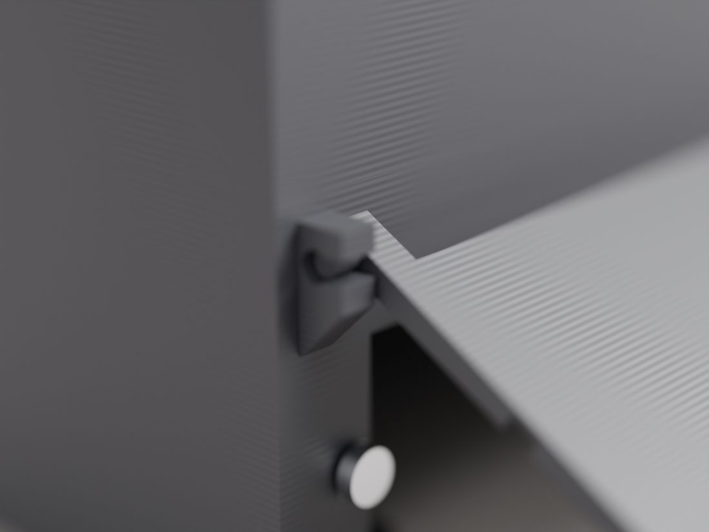
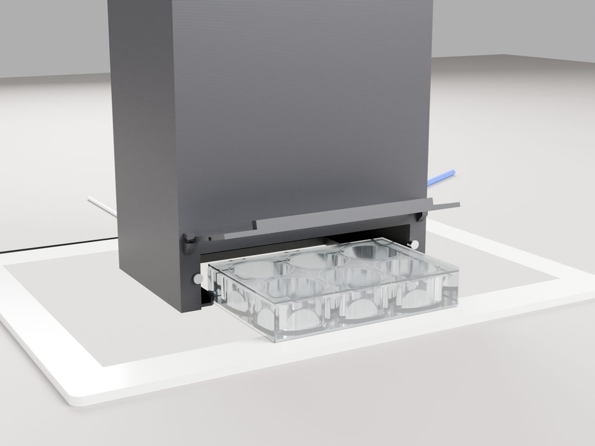
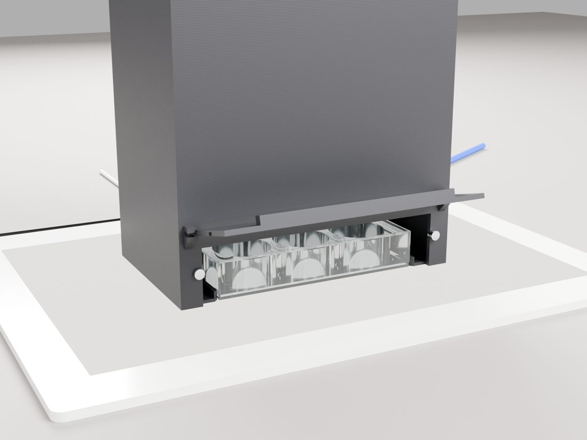

Clonogenic plate scanner · variant B · rev 3.0
Door, loading and the flip



How the door works
The door is a flap that hangs from two Ø3 pins printed onto its ears. The frame's lugs have C-shaped slots: hold the door at 45°, push it back, and the pins click into their seats. Gravity closes it; two Ø6 magnets in its lower corners pull it flat against the frame so the 34 mm slot is light-tight. A solid lip along its lower edge is the finger pull; there is no opening in the door, so no light path.
Loading, lid up
Slide the plate along the pad into the three-sided pocket until it stops on the rear wall; the side walls have 45° lead-ins. A1 goes rear-left (the small triangle on the rim). Drop the flap, press the button: the camera photographs the lid.
Flipped, for the colonies
Pull it out, flip it toward you about the long side so the lid rides in the pocket, push it back, press again. The well floors face the lens; the ink on the lid is against the pad, 20 mm below the colonies, and dims the light by at most 10 % over a 70 mm blur.
Pocket clearance
0.4 mm / side
Hinge pin
Ø3 × 3.5, C-slot 2.4 wide
Magnets
2 pairs Ø6 × 2 N35